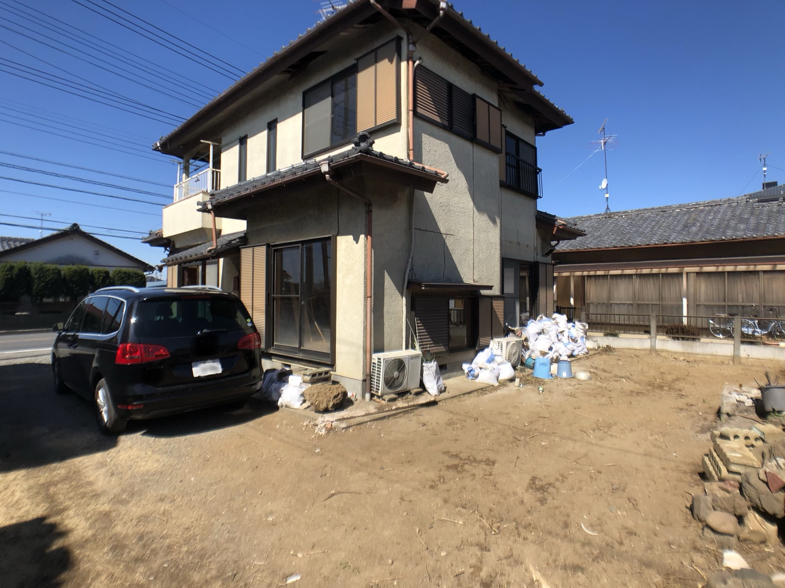
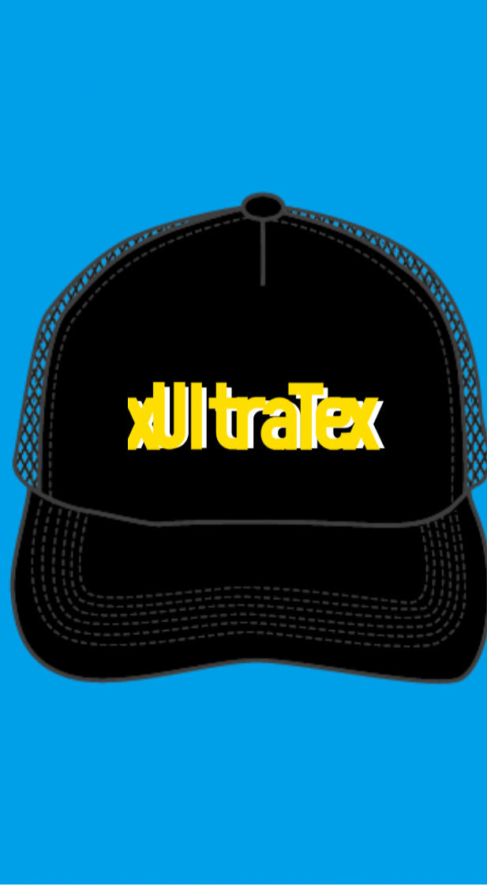
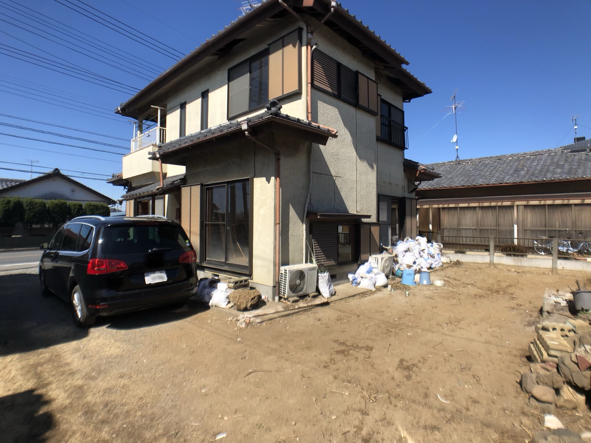
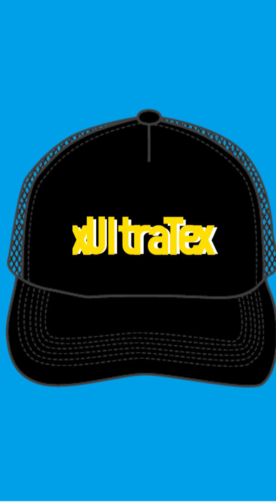

— すべての洋服に、もう一度スポットライトを —
私たちは、ご家庭で眠っているお洋服を再び活かすために
45L袋にいっぱいで1000円にて回収しております。
世代・年代は問いません。キッズ・メンズ・レディース、すべてOK！
※ 状態によっては回収をお断りする場合があります。
回収した衣類は、クリーニング・検品・仕分けのうえ、国内外のマーケット（eBay・ヤフオク・メルカリ等）にて再販。
廃棄を減らし、衣類に新たな命を吹き込む — 私たちはそんな循環型の社会に貢献したいと考えています。
回収のご依頼は、InstagramのDMまたはSMSにて承っております。
初めての方も、お気軽にご連絡ください。
※連絡先は現在準備中です。
※LINEなど追加チャネルについても、順次導入予定です。
 



大量生産・大量廃棄の時代が続く中で、私たちは「再流通の力」を信じています。
サステナブルな社会の実現は、遠い未来の話ではありません。
一人ひとりの小さなアクションが、やがて大きな循環を生むのです。
SDGs 12.「つくる責任、つかう責任」
私たちの活動は、この目標にも深く共鳴しています。